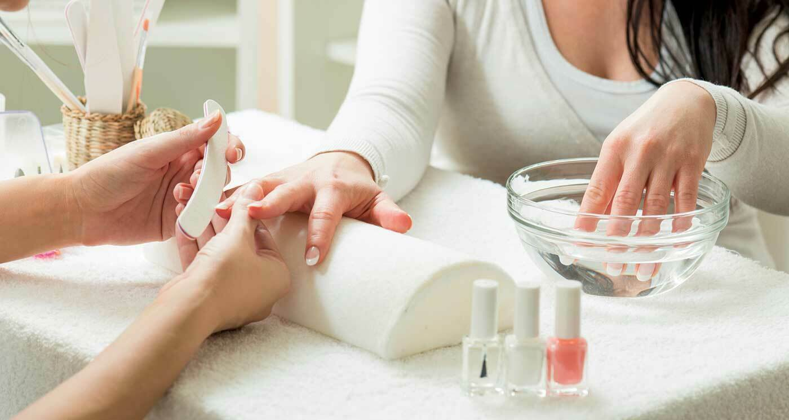

ناخن
ناخن
 میکاپ
میکاپ
 مو
مو
 مانیکور
اصلاح و کوتاهی مو در آرایشگاه زنانه:
یکی از روش های تاثیر گزار برای تغییر حالت صورت و تنوع در چهره کوتاهی مو است. برای سالم نگه داشتن مو و
فرار از موخوره و شکستگی های ساقه ی مو بهترین روش حذف قسمت های آسیب دیده است. مدل های متنوعی از کوتاهی مو
مثل مدل باب، مصری، چتری، تیفوسی و پیکسی وجود دارد و آرایشگر ها با استفاده از قیچی و ماشین های اصلاح
اینکار را به صورت حرفه ای انجام میدهند. برای داشتن مو های زیبا و سالم باید به متخصصان این حوزه رجوع
کنید.
کوتاهی باید متناسب با فرم صورت انجام شود:
- صورت های کشیده با پیشانی بلند باید مدل هایی را انتخاب کنند که قسمتی از پیشانی با چتری ها پوشانده شود.
-کسانی که گردن های بلندی دارند باید مدل های کوتاهی را انتخاب کنند که جلوی مو بلندتر از پشت آن باشد . تا گردن کوتاه تر دیده شود.
-گردن های کوتاه مدل مو های خیلی کوتاه دخترانه مناسب است تا تمام گردنشان دیده شود.
-هیکل های درشت با مدل موی بلند و اندام های لاغر با مدل های کوتاه زیباتر میشوند.